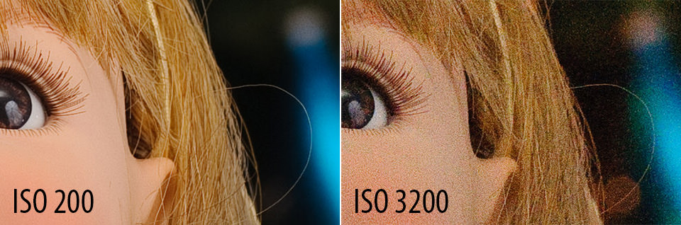
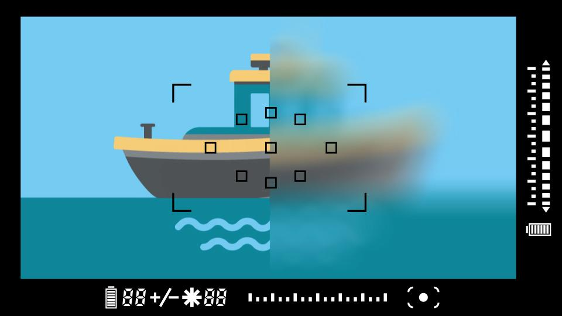

Diaphragm or in other words "F-STOP" or "F-Number" or "Aperture" is simply how your camera handling the quantity of light coming through your linses. Diaphragm affect 2 things in your picture: first is light coming in, so brightness,
and second is so called "depth of field". Depth of filed is what is the distance which is in focus. Smaller is the hole larger is the depth of field, but lower is the light too! It is mesured 1/number, 1/1 being the largest number!
With the diaphragm whide open so "f/1.8" or "f/2" you get the "Bokeh" effects. To note that linses which offer higher opening are more costly
Shutter Speed
Credit to:https://jnrphotovideo.com
Let us jump to "Shutter Speed", it is another importatnt feature in Camera which affect your picture quality. It is also fructure but this time of seconds- modern cameras offer the 1/8000 of milliseconds
ISO

Credit to:https://photographylife.com
ISO is one of the three pillars of photography (the other two being shutter speed and aperture), and it has a major effect on your images. How does camera ISO affect your images? In this article, we will introduce ISO for beginners and explain how to
use it effectively for the best possible results. In very basic terms, ISO is simply a camera setting that will brighten or darken a photo. As you increase your ISO number, your photos will grow progressively
brighter. For that reason, ISO can help you capture images in darker environments, or be more flexible about your aperture and shutter speed settings. However, raising your ISO has consequences. A photo taken at too high of an
ISO will show a lot of grain, also known as noise, and might not be usable. So, brightening a photo via ISO is always a trade-off. You should only raise your ISO when you are unable to brighten the photo via shutter speed or aperture
instead (for example, if using a longer shutter speed would cause your subject to be blurry).
Focus

Credit to:https://www.bhphotovideo.com
Before there was autofocus, there was focus. The camera is a light-tight box that is used to expose a photosensitive surface (film or digital sensor) to light. In order to focus the light onto the surface, most cameras (and your own eyes) use a lens to
direct the light. Why did I say, “Most?” Well, there are many types of cameras around that do not rely on lenses to focus light. The “pinhole camera” is a box with a tiny hole on one end and a photosensitive surface on the other.
Light comes through the tiny opening and is projected onto the rear wall of the box. A search of the Internet or your local library will reveal that scientists and engineers are currently working on developing lens-less cameras
that are never out of focus and avoid the unfortunate characteristics imparted to light when it passes through glass or plastic lenses. For the time being, however, nearly all of us are using cameras that focus light through a
lens.